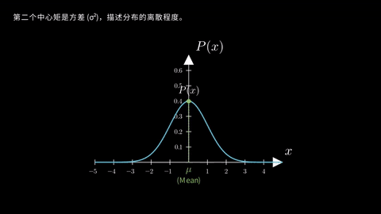
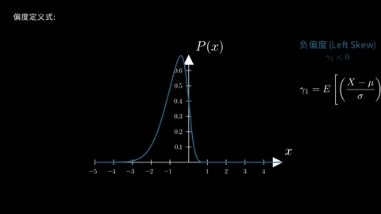
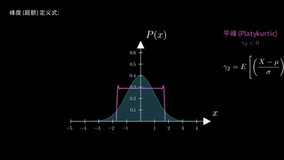
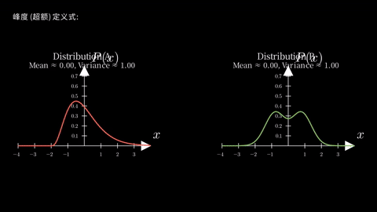

统计物理核心概念动画演示
场景 1: 概率与可观测量
1. 系统状态描述：向量 x, 概率 p(x), 可观测量 f(x) 与 p(f(x))
动画演示: 在这个动画中，我们首先会看到一群随机运动的抽象粒子。接着，屏幕上出现符号 \(x\)，它代表了系统的瞬时状态。然后您会注意到，当 \(x\) 被定义为N维向量 \(x \in \mathbb{R}^N\) 时，这个符号会演变为 \(x \in \mathbb{R}^N\)，同时粒子们会排列成一条直线，这样就形象地展示了N维向量的概念。紧随其后，概率密度函数 \(p(x)\) 登场，它描述了我们找到系统处于特定状态 \(x\) 的可能性大小。再然后，通过一个高亮显示的粒子，我们引出了可观测量 \(f(x)\)，它代表了对特定状态的一次测量。最后，我们引入了 \(p(f(x))\)，也就是这个可观测量的概率分布。所有这些重要的符号会和动态的粒子一起展示一段时间，然后渐渐淡出，为我们下一阶段的分析做好准备。
旁白 (VO): "想象一下，我们想描述一个神经元的活动，或者一群粒子的位置。这些都是随机变量，它们的状态可以用一个向量 \(x \in \mathbb{R}^N\) 来表示。我们如何精确描述它们的行为呢？首先，我们需要概率密度函数 \(p(x)\)。对于系统，我们可以进行观测，这些可观测量是系统状态的函数，记为 \(f(x)\)。而我们通常关注的是这个可观测量的概率分布 \(p(f(x))\)。"
2. 数据点、坐标轴(f(x), p(f(x)))与直方图
动画演示: 在我们了解了基本概念之后，您会看到场景中首先出现了一个坐标系，横轴是可观测量 \(f(x)\)，纵轴则是它的概率密度 \(p(f(x))\)。紧接着，大量的随机数据点，就如同我们对神经元活动进行了多次测量一样，出现在坐标轴的下方。这些数据点代表了对可观测量 \(f(x)\) 的多次测量结果。请注意观察，这些数据点是如何开始聚集成一些初步的直方图条形的。我们通过统计落在不同区间内的数据点数量，并进行归一化处理，就得到了这些直方图线条。这些线条展示了数据分布的初步形态，而它们的高度，则直接反映了对应区间的概率密度值。
3. 直方图到PDF(基于p(f(x)))及性质
动画演示: 随着我们加入更多的数据点，之前形成的、基于概率密度的直方图条形会继续增长和调整，逐渐显现出平滑的轮廓。最终，这些条形会过渡并演化成一条平滑的曲线，这就是我们所说的概率密度函数 (PDF)，比如一条高斯曲线。这条曲线下的面积就对应着概率。动画接下来会为我们展示PDF的一些重要性质，例如，屏幕上会出现公式 \(p(y) = \langle\delta(x-y)\rangle_x\)，它解释了PDF的一种重要理论表达。随后，动画还会演示PDF曲线下总面积被填充的过程，并显示公式 \(\int p(x)dx = 1\)，以此来强调总概率为1的重要性。
3.1 公式概览：\(p(y) = \langle\delta(x-y)\rangle_x\)
动画演示: 这个动画片段专注于解释概率密度函数 \(p(y)\) 的核心定义公式：\(p(y) = \langle\delta(x-y)\rangle_x\)。首先，您会看到完整的公式在屏幕上方清晰展示。然后，动画的焦点会移到公式的左侧，也就是 \(p(y)\)，同时文字会解释它就是'概率密度函数'。为了更直观地展示其含义，动画还会配上一个示例性的PDF曲线图，告诉我们它描述的是随机变量取特定值 \(y\) 附近的相对可能性大小。
3.2 解释 \(y\) (特定状态) 与 \(x\) (随机状态)
动画演示: 在公式 \(p(y) = \langle\delta(x-y)\rangle_x\) 中，动画首先会为我们解释 \(y\)。文字会说明，\(y\) 代表的是'特定的观测值或状态'，也就是我们希望了解其概率密度的那个确切结果。在视觉上，我们会通过数轴上的一个固定点来表示 \(y\)。接着，动画会解释 \(x\)。文字告诉我们，\(x\) 是'系统的瞬时随机状态'，代表了系统内部那些不断随机变化的变量或数值。相应地，视觉上则会通过数轴上一个不断随机移动的点（或者多个随机点）来表示 \(x\)。
3.3 狄拉克 \(\delta\) 函数：\(\delta(x-y)\)
动画演示: 现在，动画的焦点集中在 \(\delta(x-y)\) 这一项上，它为我们解释了什么是狄拉克 Delta 函数。通过文字描述，我们了解到它的特性：这是一个理想化的'选择器'或'探针'。当系统的瞬时状态 \(x\) 正好是我们所关注的特定状态 \(y\) 时（也就是说，当 \(x=y\) 时），它会产生一个无限大的尖锐响应，并且其积分为1；而当 \(x \neq y\) 时，它的值则为零。在视觉上，我们会看到一个坐标系，其中 \(y\) 是固定的，一个移动的 \(x\) 点在横轴上扫过。请注意观察，当 \(x\) 经过 \(y\) 点时，一个尖锐的脉冲（也就是Delta函数）就会在 \(y\) 的位置出现，否则这个脉冲就会消失。
3.4 期望值 \(\langle\dots\rangle_x\)：对所有 \(x\) 取平均

动画演示: 最后，动画为我们解释了 \(\langle \dots \rangle_x\) 这个符号的含义，它表示对所有可能的随机状态 \(x\) 取统计平均，也就是期望值。在视觉上，我们会看到大量随机采样的 \(x\) 点，这些点的分布可能遵循某个潜在的 \(P_{underlying}(x)\)。对于每一个 \(x\)，当它接近某个特定的 \(y\) 值时，就会产生一个 \(\delta(x-y)\) 响应。动画会示意我们如何将这些响应'平均'起来，最终在 \(y\) 处得到一个值，而这个值就对应于 \(p(y)\)。这就强调了 \(p(y) = \langle\delta(x-y)\rangle_x\) 的深刻含义：通过对 \(\delta(x-y)\) 在大量随机观测下的'响应强度'进行平均，我们就能够得到系统处于特定状态 \(y\) 的概率密度。
4. 可观测量的初步引入
动画演示: 在我们深入理解了概率密度函数之后，动画会再次带我们回到'可观测量'这个概念。这部分内容可以看作是一个抽象的测量过程的总结。比如说，一个探针接触到随机信号，仪表盘的指针经过摆动后稳定在一个平均值上。此时，屏幕上会出现公式 \(\langle f(x) \rangle = \int p(x)f(x)dx\)，并配有文字解释'对所有可能状态的加权平均'。这为我们后续更深入的讨论，比如不同类型的可观测量或其矩的分析，铺平了道路。
旁白 (VO): "对于系统，我们可以进行观测，比如测量神经元的平均放电率，或者粒子的平均位置。这些可观测量是系统状态的函数，记为 \(f(x)\)。它们的平均值，即期望值 \(\langle f(x) \rangle\)，包含了关于系统的重要信息。"
场景 2: 矩与累积量
概念引入 (源自VO脚本): "期望值可以通过对可观测量 \(f(x)\) 进行泰勒展开来计算，这自然地引出了'矩'的概念。如果我们将 \(f(x)\) 围绕原点展开，那么展开式中的系数就与 \(x\) 的各阶幂次的期望值，即各阶矩，联系起来了。"
在理解这一概念时，脚本中设想的视觉表现为：首先展示 \(f(x)\) 的泰勒展开式 \(f(x) = f(0) + f'(0)x + f''(0)x^2/2! + \dots\)。取期望后，我们得到 \(\langle f(x) \rangle = f(0) + f'(0)\langle x \rangle + f''(0)\langle x^2 \rangle/2! + \dots\)。由此，矩的定义，例如多变量情况下的 \(\langle x_1^{n_1}\dots x_N^{n_N} \rangle := \int p(x) x_1^{n_1}\dots x_N^{n_N} dx\)，被突出显示，为后续讨论具体的矩（如均值和方差）奠定了基础。
前导：泰勒展开与矩的引入
动画演示: 这个动画展示了如何从一个一般的可观测量 \(f(x)\) 出发，通过对其进行泰勒展开，自然地引出各阶矩的概念。首先，我们展示函数 \(f(x)\)。接着，将其在 \(x=0\) 附近进行泰勒展开，显示出展开式的前几项：\(f(x) = f(0) + f'(0)x + \frac{f''(0)}{2!}x^2 + \frac{f'''(0)}{3!}x^3 + c_4 x^4 + \dots\)，其中 \(c_4 x^4\) 是对四阶项的简化表示。然后，对整个展开式两边取期望值，得到 \(\langle f(x) \rangle = f(0) + f'(0)\langle x \rangle + \frac{f''(0)}{2!}\langle x^2 \rangle + \frac{f'''(0)}{3!}\langle x^3 \rangle + c_4 \langle x^4 \rangle + \dots\)。在这个过程中，（尽管此版本动画中高亮矩的部分因技术问题暂时移除）原始意图是逐项高亮 \(\langle x \rangle\) (一阶矩，均值)，\(\langle x^2 \rangle\) (二阶矩)，\(\langle x^3 \rangle\) (三阶矩)，以及 \(c_4 \langle x^4 \rangle\) (与四阶矩相关项)，并给出文字说明。最后，动画会展示矩的一般定义式 \(\langle x^n \rangle = \int_{-\infty}^{\infty} x^n p(x) dx\)。为了更具体地说明，动画接着会给出例子，例如当 \(n=1\) 时，该定义对应于均值 \(\langle x \rangle = \int x p(x) dx\)，而当 \(n=2\) 时，它对应于二阶原点矩 \(\langle x^2 \rangle = \int x^2 p(x) dx\)。随后还会展示多变量情况下矩的推广定义，以此总结如何从可观测量的展开中引出矩的概念。
旁白 (VO): "为了系统地理解可观测量的统计特性，我们常常分析它的各阶矩。一个强大的方法是从可观测函数的泰勒展开入手。考虑一个可观测量 \(f(x)\)，如果它足够平滑，我们可以在某一点（比如 \(x=0\)）附近将其展开成幂级数。当对这个展开式取期望时，每一项都自然地对应于 \(x\) 的不同幂次的期望值，也就是我们所说的各阶矩。这个过程为我们理解均值、方差乃至更高阶的统计量提供了一个统一的视角。"
1. 矩：均值与方差
动画演示: 我们从一个标准高斯概率分布 \(P(x)\) 开始。首先展示的是均值 (\(\mu = \langle x \rangle\))，它通过一条垂直的虚线标示出分布的中心。接着，动画会引入方差 (\(\sigma^2 = \langle (x-\mu)^2 \rangle\)) 的概念，通过在均值两侧标出 \(\pm \sigma\) 的范围，并用特定颜色填充该区域，来形象地展示方差如何度量分布的离散程度或宽度。相应的数学符号和文字标签（如"Mean", "Variance"）也会一并出现。
旁白 (VO): "一阶矩 (\(\langle x \rangle\)) 就是我们熟悉的均值（用 (\(\mu\)) 表示），它告诉我们分布的中心位置。二阶中心矩 (\(\langle (x - \langle x \rangle)^2 \rangle\)) 是方差（用 (\(\sigma^2\)) 表示），描述了分布的离散程度或展宽。"
2. 偏度 (Skewness)
动画演示: 在介绍了均值和方差之后，动画过渡到偏度。初始的高斯分布会首先转变为一个正偏（右偏）分布（例如使用偏斜正态分布实现），此时屏幕右侧会出现标签"正偏度 (Right Skew)"和数学符号 \(\gamma_1 > 0\)。然后，分布会转变为负偏（左偏）分布，标签相应变为"负偏度 (Left Skew)"和 \(\gamma_1 < 0\)。最后，动画会展示偏度的定义公式：\(\gamma_1 = E\left[ \left( \frac{X-\mu}{\sigma} \right)^3 \right]\)。
旁白 (VO): "三阶矩与偏斜度 (Skewness) 相关，它衡量了分布的不对称性。正偏斜意味着分布的右尾更长，负偏斜则意味着左尾更长。"
3. 峰度 (Kurtosis)
动画演示: 偏度演示完毕后，分布会恢复到标准高斯形态，作为峰度演示的基准（正态峰，Mesokurtic, \(\gamma_2 = 0\)，其中 \(\gamma_2\) 指超额峰度）。接着，高斯分布的虚影会保留在背景中，前景的分布曲线会首先变换为一个更尖峭、尾部更厚的分布（例如t分布），屏幕右侧标签显示"尖峰 (Leptokurtic)"和 \(\gamma_2 > 0\)。然后，曲线会再次变换，变为一个峰顶更平坦、尾部更薄的分布（例如均匀分布的近似），标签显示"平峰 (Platykurtic)"和 \(\gamma_2 < 0\)。最后，动画会展示超额峰度的定义公式：\(\gamma_2 = E\left[ \left( \frac{X-\mu}{\sigma} \right)^4 \right] - 3\)。
旁白 (VO): "四阶矩与峰度 (Kurtosis) 相关，它描述了分布峰部的尖锐程度以及尾部的厚重程度。与正态分布相比，尖峰分布具有更尖的峰和更厚的尾，而平峰分布则相反。"
4. 矩的局限性：相同矩，不同形
动画演示: 然而，仅靠低阶矩有时会产生误导。动画将会并列展示两个形状明显不同的概率分布（例如一个单峰Gamma分布和一个双峰高斯混合分布）。通过文字或符号，我们会了解到，尽管它们的均值 (\(\mu\)) 和方差 (\(\sigma^2\)) 可能完全相同或非常接近，但它们的整体形态却存在显著的差异。屏幕下方会出现文字"Same Mean & Variance, Different Shapes!"，清晰地说明了仅靠均值和方差是不足以完全描述一个分布的。
旁白 (VO): "矩虽然为我们提供了很多关于分布的信息，但仅靠低阶矩（如均值和方差）有时会产生误导。不同的分布可能拥有相同的低阶矩，但形状却大相径庭。"
5. 累积量：描述形状的新视角（定义）
动画演示: 为了更好地区分这些分布的形状，我们现在引入累积量的概念。之前展示不同分布的图形和统计数据会淡出。屏幕左上角会出现标题 "Cumulants (\(\kappa\))"，紧接着下方会列出前几阶累积量的定义：\(\kappa_1 = \text{Mean}\)，\(\kappa_2 = \text{Variance}\)，以及 \(\kappa_3, \kappa_4, \dots\) 用于捕捉其他形状细节。这部分内容现在固定在屏幕左上角，为后续演示留出空间。
旁白 (VO): "为了更好地区分分布形状，并提炼出'纯粹'的统计依赖关系，我们引入累积量（用 (\(\kappa\)) 或双尖括号 (\(\langle\langle \dots \rangle\rangle\)) 表示）。第一累积量 (\(\kappa_1\)) 就是均值 (\(\mu\))，第二累积量 (\(\kappa_2\)) 就是方差 (\(\sigma^2\))。"
6. 高阶累积量：洞察细微差异
动画演示: 关键在于更高阶的累积量。在左上角累积量公式的下方，之前用于展示"矩的局限性"的两个不同分布（A和B）会以较小的尺寸重新出现，并排排列。动画会高亮显示左上角的 \(\kappa_3, \kappa_4, \dots\) 部分，然后从它引出箭头，分别指向分布A和分布B，并配以文字说明（如"Different Shape (e.g., Skew)"，"Different Shape (e.g., Bimodality)"）来强调这些高阶累积量如何捕捉到这些分布的独特特征，即使它们的低阶矩可能相似。屏幕下方最后会出现总结性文字，如"Higher cumulants (\(\kappa_3, \kappa_4, \dots\)) quantify these distinct features."，强调高阶累积量在区分复杂形状时的威力。
旁白 (VO): "关键在于高阶累积量（如 (\(\kappa_3, \kappa_4, \dots\))）。它们能捕捉到简单的均值和方差所忽略的分布形状细节，从而有效区分那些仅凭低阶矩看似相同的分布。例如，所有高斯分布的三阶及以上累积量都为零，这使得高阶累积量成为衡量分布非高斯性的一个重要指标。"